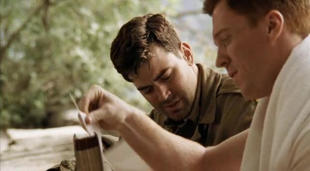

01
奥地利湖边 · 框架谈话（开头先呈现，后段返回）第一次认真问：以后做什么？

本集湖边谈话；时间序列按回忆与返回的叙事结构归纳，不指定谈话的精确日期。剧情事实温特斯与尼克森谈到留在军队和战后的工作。尼克森带来从训练时期开始的照片，也提出让温特斯去新泽西工作的可能；开头随后回望巴伐利亚，后段再回到湖边。[2]
这一场为什么重要 · 个人解读
尼克森问的是战后，温特斯先回答的是早餐。这个小误会很贴切：在战争里，下一顿饭已经是一种未来；现在，他们要突然学会想象几年后的自己。照片与工作邀约分别向后、向前，把朋友关系从共同作战延伸到共同生活。